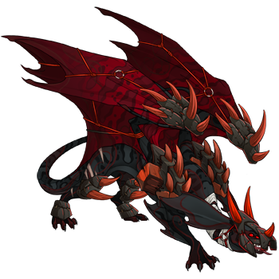
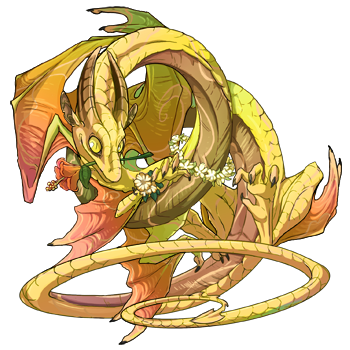

Apocrypha & Lux
Best friends and former members of Viral Evolution, if only on the outskirts. Apocrypha was a devoted warrior; Lux, a would-be Representative of the Light Flight who left home too soon. When Viral Evolution dissolved, the duo pledged their allegiances to the wandering empress Vulcan; it was Apocrypha’s idea.
Alas, rather than reclaimed glory, the would-be empire dissolved into darkness, taking these two with. Since then they’ve lingered in the Tangled Wood as helpful voices, urging other lost souls not to follow their paths.